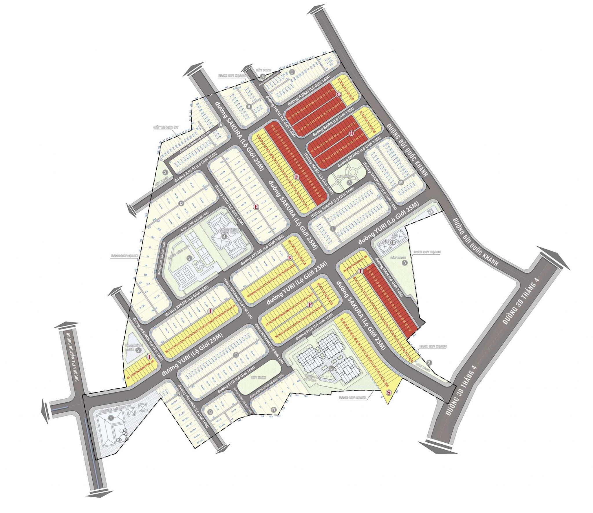
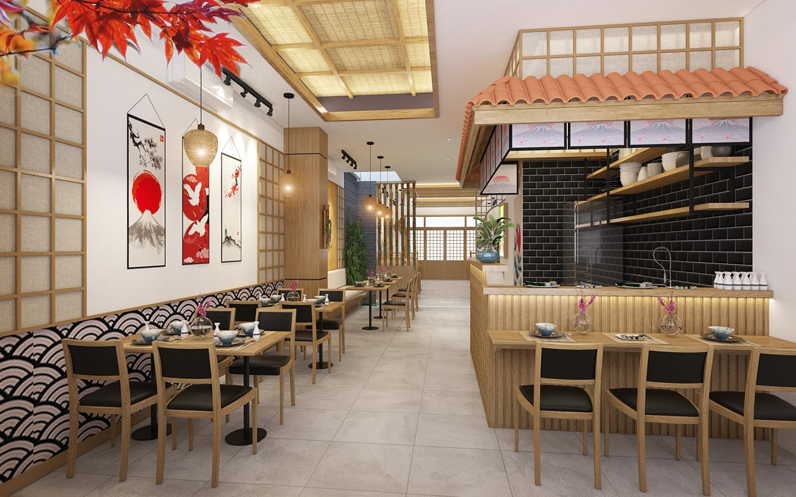
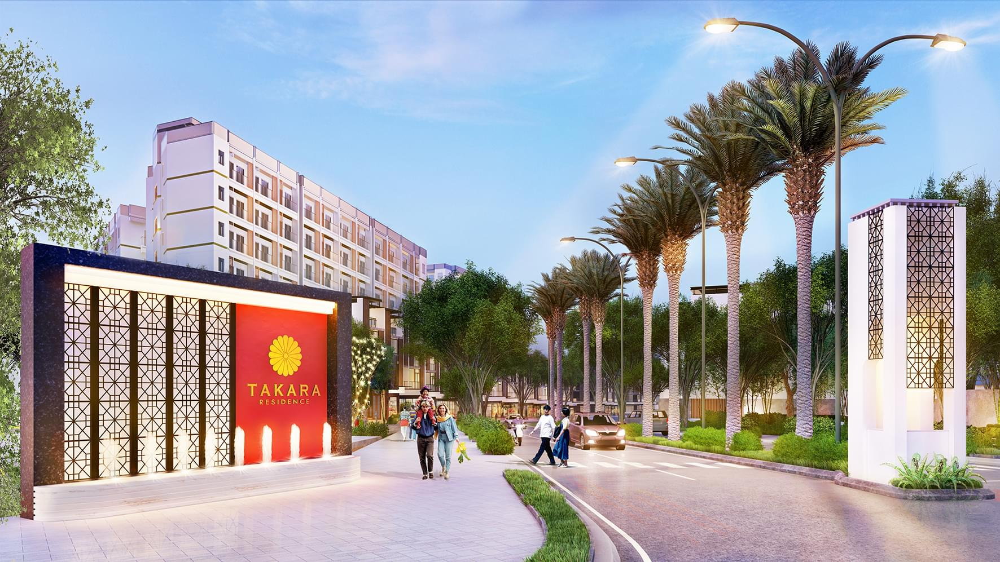

TINH HOA
CHUẨN SỐNG NHẬT
Điểm Khác Biệt Tại Takara Residence
Sở Hữu Vị Trí Kim Cương
Dự án nằm tại lõi trung tâm Phường Chánh Nghĩa – khu vực an ninh, dân trí và đầy đủ tiện nghi cao cấp nhất thủ Dầu Một. Nơi được rất nhiều các chuyên gia, giới thượng lưu chọn làm chốn an cư tại Bình Dương.
Đô Thị Chuẩn Nhật "có 1 Không 2" tại Bình Dương
Toàn bộ khu đô thị được thiết kế theo phong cách Nhật Bản. Tinh tế và tỉ mỉ từ cành cây, ngọn cỏ, các tiện ích cho đến thiết kế đặc sắc của từng căn nhà. Cư dân sống tại đây sẽ tận hưởng được cuộc sống tiện nghi hiếm có giữa trung tâm tỉnh Bình Dương.
Pháp Lí Hoàn Thiện
Dự án đã có đầy đủ hồ sơ pháp lí ( 1/500, chấp thuận đầu tư…), đủ điều kiện mua bán và đang xây dựng rầm rộ. Đặc biệt, mỗi căn nhà đều đã có sổ hồng riêng từng lô. Khách hàng mua được ký hợp đồng mua bán ngay. Nhận sổ hồng có nhà trên đất sau khi nhận bàn giao nhà ( trong vòng 6 tháng )
Ý tưởng thiết kế
Takara Residence
Lấy cảm hứng từ xứ sở Hoa Anh Đào – Nhật Bản – Nơi được cả thế giới ngưỡng mộ về sự thanh tao, tinh tế trong từng nét văn hoá. Dự án Takara Residence là khu đô thị phức hợp chuẩn sống phong cách Nhật. Từ những đường nét kiến trúc, không gian văn hóa, hệ thống tiện ích cho đến các con đường.
Cư dân nơi đây sẽ hưởng trọn phong cách sống đa trải nghiệm với sự kết hợp giữa văn hoá truyền thống giao thoa với lối sống tinh giản hiện đại của người Nhật ngay giữa lòng Thành phố Thủ Dầu Một sầm uất.
Tổng quan dự án
Chủ đầu tư
Công Ty CP ĐT XĐ & PT BĐS Thành Nguyên
Phát triển dự án: New World Capital
Xây dựng: Toàn Lộc & Trung Đạo
Quản lí vận hành: The Alcove
Quản lí khách sạn: Citadines Connect
Sản phẩm
– 400 Townhouse: 5×21; 8x21m2 – xây dựng 4 tầng
– 120 Shophouse: 5×24; 8x24m2 – Xây dựng 4 tầng
– 97 Villas: 200 – 400m2
– 688 Căn hộ
Vị trí
Nút giao đường 30/4 – Bùi Quốc Khánh, P. Chánh Nghĩa, Thủ Dầu Một
Tiện ích
Club house Yoko; Onsen Spa; TTTT Michio; Trà Đạo Yasu; Khu Vui Chơi Trẻ Em Aiko; Hồ Bơi Tràn Ruri; Con Đường Tre Sagano; Vườn Hoa Haruko; Công Viên; Hồ Cá Koi; Trung Tâm Thương Mại Shibuya; Khu Phố Ẩm Thực…
Quy mô
– Dự án rộng hơn 19,7ha
– Mật độ xây dựng 51,48%
Tiến độ
– Khởi công 2/2020
– Công bố tháng 12/2020
– Bàn giao quý 1/2022
GIỚI THIỆU DỰ ÁN
Nằm trong khu vực kinh tế trọng điểm phía Nam, Bình Dương là tỉnh có tốc độ tăng trưởng kinh tế cao hơn mức bình quân chung của cả nước. Là “thủ phủ” công nghiệp và là tỉnh thành thu hút vốn FDI đứng thứ 3 cả nước. Hiện tại, có hơn 48 cụm khu công nghiệp, 508 doanh nghiệp lớn nhỏ.
Riêng thành phố Thủ Dầu Một là đô thị hạt nhân, đang định hướng để trở thành một khu đô thị năng động, hiện đại và là nơi kết nối giao lưu quốc tế, thương mại dịch vụ để trở thành một đô thị thông minh trong tương lai.
Xem chi tiết
Tiện nghi trọn vẹn - Đậm chất Nhật
Tạm gác những bộn bề của cuộc sống, để dành trọn ven những khoảnh khắc tuyệt vời bên gia đình và bạn bè thông qua những hoạt động, trải nghiệm tuyệt vời – được lấy cảm hứng từ đất nước mặt trời mọc.
Nơi dành riêng cho những phút giây yêu thương vẹn đầy. Nơi cộng đồng tinh hoa tận hưởng cuộc sống thư giãn, nghỉ ngơi. Takara Residence hướng đến việc kết nối cộng đồng tạo dựng các giá trị văn minh, hiện đại. Mỗi cư dân sẽ được tận hưởng những tiện ích chất lượng; Môi trường sống an ninh 24/24, vun đắp nền tảng vững chắc cho tương lai.
Hệ thống tiện ích
1. Onsen Spa; Trà đạo Yasu; TT thể thao Michio
2. Hồ bơi tràn bời Runi; Sân tennis, cầu lông; Con đường tre Segano
3. Trung tâm thương mại Shibuya
4. Phố ẩm thực Kimochi; Phố đèn cá chép Koinobori
5. Công viên Sentoso
6. Cafe phong cách Nhật Nara
7. Cổng dự án
8. Công viên Nyoko
9. Khu vui chơi trẻ em Aiko
10. Ẩm thực lẩu Shabu Shabu
11. Khu vườn Haruko; Hồ cá Koi
12. Phố ẩm thực Yatai
Tâm Điểm Đắt Giá Của Bình Dương
Takara Residence tọa lạc tại lõi trung tâm TP. Thủ Dầu Một. Ngay nút giao của 3 trục đường: 30 tháng 4, Bùi Quốc Khánh và Nguyễn Tri Phương. Trong bán kính 5km, cư dân có thể kết nối với mọi tiện ích đẳng cấp nhất mà Bình Dương có được.
Các hướng kết nối từ Takara Residence
- 1,8km: Đến Đại lộ Bình Dương và Becamex Tower
- 3km: Đến trung tâm Thành Phố Thủ Dầu Một
- 5 km: Đến cao tốc Mỹ Phước – Tân Vạn
- 16km: Đến quận Thủ Đức, TP.HCM
CÁC TIỆN ÍCH ĐẲNG CẤP
Hệ thống tiện ích thư giãn, giải trí đẳng cấp lần đầu xuất hiện mang đến trải nghiệm đặc biệt cho cư dân
Mặt bằng phân lô chi tiết
Mặt bằng tổng thể
Thiết kế nội thất & Nhà phố
Nội thất
Nhà phố
Đăng ký ngay để nhận báo giá căn nhà
Thông tin liên hệ
Công Ty CP ĐT XD & KD Bất Động Sản Thành Nguyên
- Đường 30/4, P. Chánh Nghĩa, Thủ Dầu Một
- Hotline: 0924 72 7777